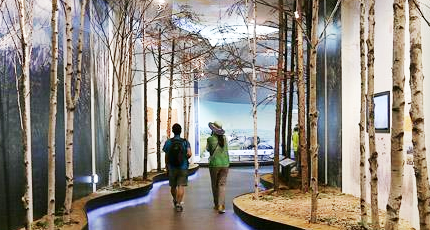
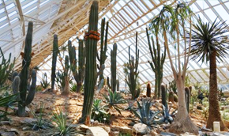
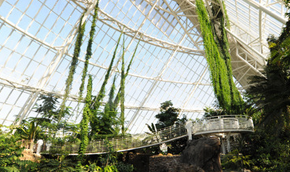
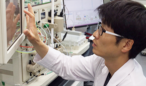

생태연구본부

생태연구본부
분자에서부터 지구생태계규모까지의 기초생태연구를
수행하여 기후변화 대응・LMO 및 외래생물의 생태적 영향 등의
br생태 현안 문제 해결과 자연 생태계의 건강성 유지와 지속가능한
이용을 위한 응용연구까지 광범위한 국내・외 생태학연구를
선도하고 있습니다.
-
융합연구실
융합연구실은 국립생태원 연구를 기획하는 연구 기획과 생태원의 연구 결과를 통합하여 새로운 가치를 창출하는 생태계 서비스 연구를 함께 진행하고 있습니다. 또한, 생물다양성 과학기구(IPBES,Intergovernmental Platform on Biodiversity and Ecosystem)의 지식 및 데이터 기술지원단(TSU, Technical support Unit)을 유치하여, 전세계 생물다양성 및 생태계 서비스를 평가하는 업무를 지원하고 있습니다. 그리고, 기후변화에 따른 생태계의 부정적 영향을 조사, 분석하여 미래 생태자산을 보전, 관리를 위한 대응방안 연구를 수행중에 있습니다.
-
생태보전연구실
생태기반연구실은 생물의 진화적 전략, 개체군과 군집생태, 생태계의 구조와 기능을 이해하고 기후 변화의 영향을 예측하여 생태계 건강성과 생물다양성을 유지하기 위한 장기생태연구를 수행하고 있습니다.
-
생태보전연구실
생태보전연구실은 토지이용변화, 기후변화, 침입외래종, 유전자변형생물, 생태재난 등 생태계 위협요인을 저감 관리하고, 생물서식처의 보호와 관리, 한반도 생태축 보전과 생태통로 복원, 도시생태계 조성과 복원 등 생태계 회복탄력성과 건강성을 증진시키는 연구를 수행하고 있습니다.